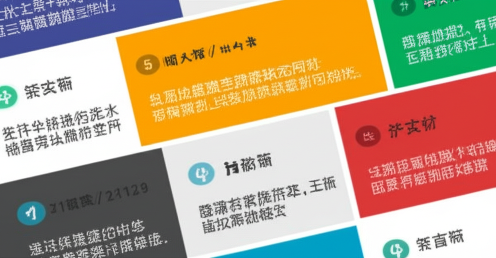

這篇文章將整理近期（近一日內）從多個來源抓取的新聞資訊，涵蓋金門、中國、科學、健康、醫療、教育、飲食、政治等不同領域。透過摘要和簡要分析，希望能提供一個快速了解時事脈動的入口，並引發對相關議題的思考。
從PanSci 泛科學、healthnews.com.tw、yahoo.com、worldjournal.com和hk.news.yahoo.com等來源可見，近期健康飲食與運動議題備受關注。例如，PanSci 泛科學討論了減重手術的選擇，強調術前與醫師充分討論的重要性。healthnews.com.tw指出，低重量高次數的訓練方式同樣能達到肌肥大的效果，特別適合某些族群。yahoo.com則提供吃粽子時如何控制血糖的建議，避免血糖飆升。worldjournal.com關注健身減重，提供實用的健康資訊。hk.news.yahoo.com分享了早餐吃番薯和香蕉改善脂肪肝的案例，但也提醒注意番薯的烹調方式，避免增肥。這些資訊顯示，大眾對於健康飲食和運動的知識需求持續增加，同時也希望獲得更個性化的建議。
vghtpe.gov.tw報導了「Go Healthy with Taiwan」活動，展現了台灣智慧醫療的實力，並吸引了國際媒體的關注。這表明台灣在醫療科技領域的創新能力正在提升，並積極尋求國際合作的機會。這不僅有助於提升台灣醫療產業的國際競爭力，也能為全球醫療健康事業做出貢獻。
kmdn.gov.tw的金門日報資訊，可能暗示地方新聞的動態，但由於 snippet 信息不足，無法判斷具體內容。president.gov.tw則報導了重量級聯邦參眾議員訪臺，總統感謝美國會跨黨派對台灣的堅定支持。bannedbook.org匯集了中國相關的新聞，但其性質屬於禁聞，反映了信息管控的現狀。這些資訊凸顯了台灣在國際政治舞台上的角色，以及區域情勢的複雜性。
總體而言，近期新聞資訊呈現多元化的趨勢，健康、醫療、政治等議題都受到廣泛關注。尤其在健康領域，大眾對於個性化、科學化的健康建議需求增加。台灣在智慧醫療領域的發展與國際合作，也展現了其創新能力和國際競爭力。政治層面，台灣在國際舞台上的角色和區域情勢的複雜性，仍然是重要的觀察點。